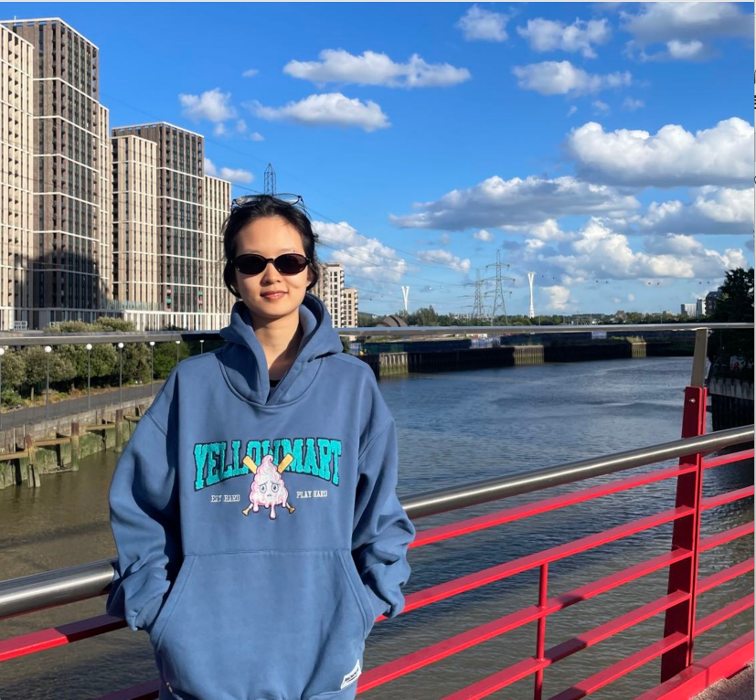
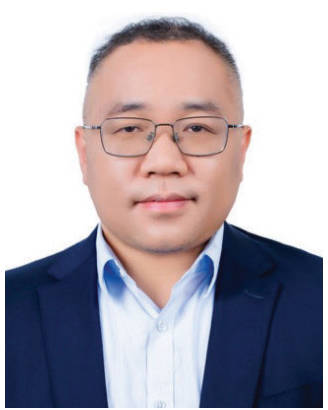
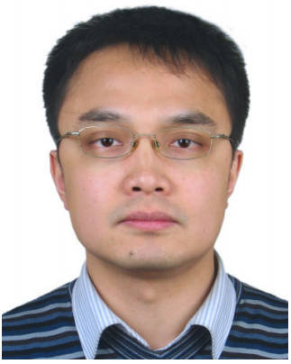
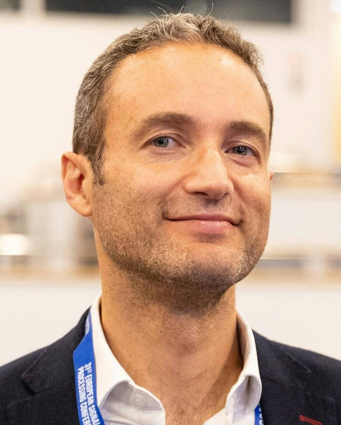
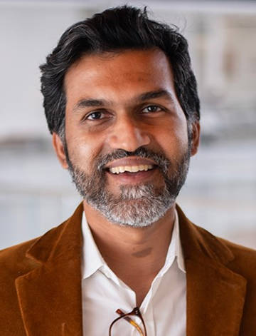
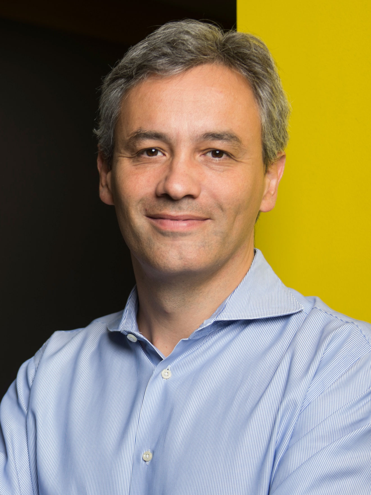
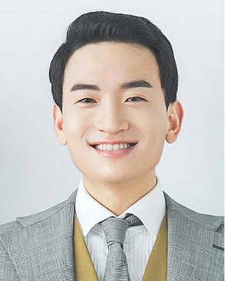
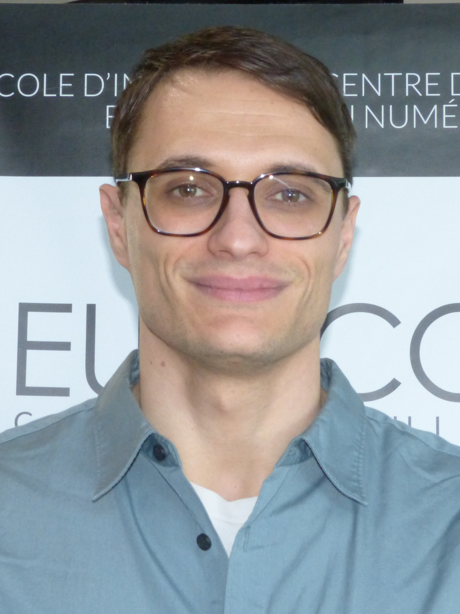
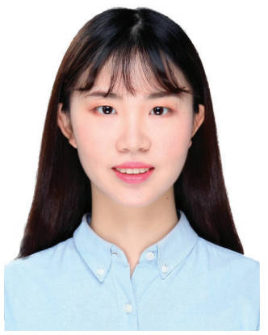
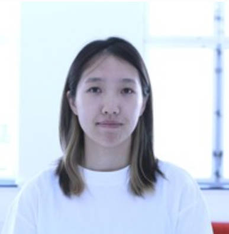

I'm currently working on building distribution-free reliability guarantees for AI decisions, and pursuing efficient learning and inference through digital twins in communication systems.

Open to research collaboration, visiting scholars, and prospective students.
Email me →I completed my PhD at the College of Information Science and Electronic Engineering, Zhejiang University, supervised by Prof. Guanding Yu and Prof. Yunlong Cai. From 2023 to 2025, I was a visiting researcher at King's College London under the supervision of Prof. Osvaldo Simeone. Until now, I have published 10 SCI journal papers (7 as first author, including 3 IEEE TWC), plus 4 EI conference papers, and have served as a peer reviewer for more than 10 high-quality journals.
B.S., Communication Engineering
Zhengzhou University
Ph.D., Information and Communication Engineering
Zhejiang University · Superviors: Prof. Guanding Yu, Prof. Yunlong Cai
Visiting Ph.D. (Joint Training)
King's College London · Supervisor: Prof. Osvaldo Simeone
Lecturer
Zhejiang Gongshang University, School of Information and Electronics Engineering
I believe that as communication systems become increasingly driven by black-box AI models, we need tools that can certify the reliability of these models' decisions without relying on restrictive assumptions. By doing this, AI can be trusted from the physical layer up to system-level decision-making. Therefore, my work builds such distribution-free reliability guarantees and combines them with digital twin to make wireless AI both provably reliable and efficient. In particular, I work on:
Distribution-free reliability guarantees for AI-driven decisions. AI-based decisions in communication systems are often overconfident and lack formal guarantees. My work builds guarantees that make no/light assumptions about the model or the data distribution, such as: conformal prediction for reliable counterfactual KPI analysis, online conformal prediction for uncertainty quantification in non-stationary edge-cloud environments, and risk control for certifying a reliable routing threshold in edge-cloud-expert LLM cascades for telecom. [TCCN25, PN25, TCOM'ea]
Efficient learning and inference through digital twins. Digital twins can generate large volumes of simulated data at low cost, yet this data remains imperfect. The central question here is how to extract genuine statistical value from such imperfect data without sacrificing validity. Rather than assuming the simulator is accurate, I treat it as a potentially biased predictor and use prediction-powered inference to combine large amounts of digital-twin-simulated data with a small amount of real data, correcting for this bias. [TWC25]
Selected publications — Journal papers
Conference papers

Guanding Yu
Professor · Zhejiang University

Yunlong Cai
Professor · Zhejiang University

Osvaldo Simeone
Professor, IEEE Fellow · Northeastern University London

Kaushik Chowdhury
Professor, IEEE Fellow · The University of Texas at Austin

Tommaso Melodia
Professor, IEEE Fellow · Northeastern University

Sangwoo Park
Assistant Professor · Zhejiang University

Matteo Zecchin
Assistant Professor · EURECOM

Mengyuan Lee
HUAWEI

Xin Su
PhD · KTH Royal Institute of Technology
[keep updating: paper acceptances, invited talks, grants, and so on]